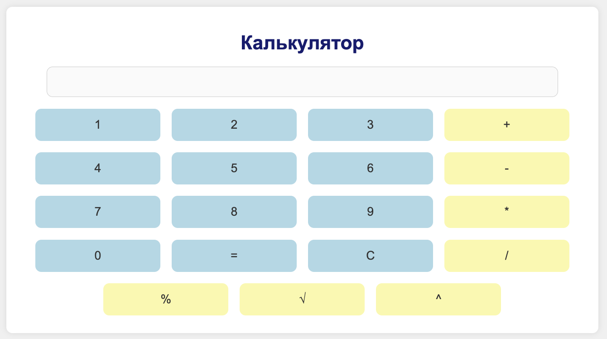

ЛАБОРАТОРНА РОБОТА № 5
з дисципліни "Основи клієнтських розробок"
ТЕМА РОБОТИ:
ФУНКЦІОНАЛЬНЕ ЗАСТОСУВАННЯ JAVASCRIPT У HTML-ДОКУМЕНТІ. ВИКОРИСТАННЯ МАСИВІВ У JS-СЦЕНАРІЯХ. РЕАЛІЗАЦІЯ ПРОГРАМ ЗАСОВАМИ МОВИ JAVASCRIPT
МЕТА:
придбати практичні навички роботи з масивами у js-сценаріях. Реалізація програм засовами мови JAVASCRIPT
МІСЦЕ РОЗТАШУВАННЯ:
РЕПОЗИТОРІЙ НА GITHUB
РЕАЛІЗАЦІЯ СОРТУВАННЯ МАСИВУ ЧИСЕЛ МЕТОДОМ ВСТАВКИ:
РЕАЛІЗАЦІЯ КАЛЬКУЛЯТОРА:
ВИСНОВКИ:
JavaScript є незамінною частиною сучасної веб-розробки, оскільки він надає можливість створювати інтерактивні та динамічні веб-сайти. Як основний мова програмування для клієнтської сторони, JavaScript дозволяє розробникам маніпулювати елементами DOM, реагувати на події користувача, а також асинхронно обмінюватися даними з сервером, що призводить до покращення користувацького досвіду та реакції інтерфейсу. Завдяки своїй гнучкості та широкому застосуванню, від простих скриптів до складних односторінкових додатків, JavaScript відіграє ключову роль у створенні інтерактивних та відгукових веб-сайтів, що є критично важливим для сучасного веб-дизайну та розробки.